Lattice 4x2
Contents
[1]:
import numpy as np
import pandas as pd
from scipy.linalg import expm, null_space, solve
from scipy.sparse.linalg import expm_multiply
import matplotlib.pyplot as plt
import networkx as nx
from qlinks.lattice.square_lattice import SquareLattice
from qlinks.symmetry.gauss_law import GaussLaw
from qlinks.computation_basis import ComputationBasis
from qlinks.solver.deep_first_search import DeepFirstSearch
from qlinks.model import QuantumLinkModel
from qlinks.visualizer.graph import GraphVisualizer
[2]:
def format_custom_index(index):
return [f"({i}) {idx}" for i, idx in enumerate(index)]
[3]:
def setup_model(lattice_shape, n_solution, coup_j, coup_rk):
gauss_law = GaussLaw.from_staggered_charge_distri(*lattice_shape)
gauss_law.flux_sector = (0, 0)
dfs = DeepFirstSearch(gauss_law, max_steps=int(1e+8))
basis = gauss_law.to_basis(dfs.solve(n_solution))
model = QuantumLinkModel(coup_j, coup_rk, lattice_shape, basis)
return basis, model
Lattice 4x2#
[72]:
coup_j, coup_rk = (1, 1)
basis, model = setup_model(lattice_shape=(4, 2), n_solution=16, coup_j=coup_j, coup_rk=coup_rk)
evals, evecs = np.linalg.eigh(model.hamiltonian)
2023-12-09 12:21:35 [deep_first_search.py] INFO: Deep First Search starts.
2023-12-09 12:21:35 [deep_first_search.py] INFO: Found 16 Solutions as required in 103 steps.
[73]:
df = basis.dataframe.copy(deep=True)
df.index = format_custom_index(df.index)
df
[73]:
| 0 | 1 | 2 | 3 | 4 | 5 | 6 | 7 | 8 | 9 | 10 | 11 | 12 | 13 | 14 | 15 | |
|---|---|---|---|---|---|---|---|---|---|---|---|---|---|---|---|---|
| (0) 17595 | 0 | 1 | 0 | 0 | 0 | 1 | 0 | 0 | 1 | 0 | 1 | 1 | 1 | 0 | 1 | 1 |
| (1) 18867 | 0 | 1 | 0 | 0 | 1 | 0 | 0 | 1 | 1 | 0 | 1 | 1 | 0 | 0 | 1 | 1 |
| (2) 19638 | 0 | 1 | 0 | 0 | 1 | 1 | 0 | 0 | 1 | 0 | 1 | 1 | 0 | 1 | 1 | 0 |
| (3) 36135 | 1 | 0 | 0 | 0 | 1 | 1 | 0 | 1 | 0 | 0 | 1 | 0 | 0 | 1 | 1 | 1 |
| (4) 37947 | 1 | 0 | 0 | 1 | 0 | 1 | 0 | 0 | 0 | 0 | 1 | 1 | 1 | 0 | 1 | 1 |
| (5) 39219 | 1 | 0 | 0 | 1 | 1 | 0 | 0 | 1 | 0 | 0 | 1 | 1 | 0 | 0 | 1 | 1 |
| (6) 39990 | 1 | 0 | 0 | 1 | 1 | 1 | 0 | 0 | 0 | 0 | 1 | 1 | 0 | 1 | 1 | 0 |
| (7) 44307 | 1 | 0 | 1 | 0 | 1 | 1 | 0 | 1 | 0 | 0 | 0 | 1 | 0 | 0 | 1 | 1 |
| (8) 50283 | 1 | 1 | 0 | 0 | 0 | 1 | 0 | 0 | 0 | 1 | 1 | 0 | 1 | 0 | 1 | 1 |
| (9) 51555 | 1 | 1 | 0 | 0 | 1 | 0 | 0 | 1 | 0 | 1 | 1 | 0 | 0 | 0 | 1 | 1 |
| (10) 52326 | 1 | 1 | 0 | 0 | 1 | 1 | 0 | 0 | 0 | 1 | 1 | 0 | 0 | 1 | 1 | 0 |
| (11) 52773 | 1 | 1 | 0 | 0 | 1 | 1 | 1 | 0 | 0 | 0 | 1 | 0 | 0 | 1 | 0 | 1 |
| (12) 55410 | 1 | 1 | 0 | 1 | 1 | 0 | 0 | 0 | 0 | 1 | 1 | 1 | 0 | 0 | 1 | 0 |
| (13) 55857 | 1 | 1 | 0 | 1 | 1 | 0 | 1 | 0 | 0 | 0 | 1 | 1 | 0 | 0 | 0 | 1 |
| (14) 60498 | 1 | 1 | 1 | 0 | 1 | 1 | 0 | 0 | 0 | 1 | 0 | 1 | 0 | 0 | 1 | 0 |
| (15) 60945 | 1 | 1 | 1 | 0 | 1 | 1 | 1 | 0 | 0 | 0 | 0 | 1 | 0 | 0 | 0 | 1 |
[74]:
evecs_df = pd.DataFrame.from_dict(
{
"eval": evals,
"kin": [(evec.T @ model.kinetic_term @ evec).item() for evec in evecs.T],
"pot": [(evec.T @ model.potential_term @ evec).item() for evec in evecs.T],
}
)
evecs_df[evecs_df["kin"].abs() < 1e-12]
[74]:
| eval | kin | pot | |
|---|---|---|---|
| 7 | 3.0 | 3.451266e-31 | 3.0 |
| 8 | 3.0 | 0.000000e+00 | 3.0 |
| 9 | 3.0 | 1.577722e-30 | 3.0 |
[75]:
# plt.matshow(model.kinetic_term)
# plt.colorbar()
# plt.show()
g = nx.from_numpy_array(-model.kinetic_term)
assert nx.is_bipartite(g)
left, right = nx.bipartite.sets(g)
# pos = nx.bipartite_layout(g, left, align="horizontal")
pos = nx.spectral_layout(g)
pos = {k: v + np.random.normal(0, 0.05, 2) for k, v in pos.items()}
nx.draw(g, pos, with_labels=True, arrows=True, connectionstyle="arc3,rad=0.2")
plt.show()
plt.spy(evecs, precision=1e-12, markersize=12)
plt.show()
# plt.imshow(np.abs(evecs), interpolation='none', cmap='binary')
# plt.colorbar()
# plt.show()


[ ]:
lap_mat = nx.laplacian_matrix(g).todense()
lap_evals, lap_evecs = np.linalg.eigh(lap_mat)
plt.matshow(lap_evecs)
plt.colorbar()
[78]:
entropies = np.asarray([model.entropy(evecs[:, i], 1, 0) for i in range(basis.n_states)])
entropy_df = pd.Series(entropies, name="entropy")
entropy_df
[78]:
0 1.536650
1 1.899841
2 0.695771
3 1.562885
4 1.528069
5 1.600664
6 1.932517
7 1.525501
8 1.611432
9 1.481633
10 1.941802
11 0.973698
12 1.147446
13 1.309708
14 1.502661
15 1.501048
Name: entropy, dtype: float64
[79]:
entropy_df.plot(style='o')
[79]:
<Axes: >

[81]:
plt.plot(evecs[:, 8], linestyle='--', marker='o')
np.where(np.abs(evecs[:, 8]) > 0.2)[0]
[81]:
array([ 1, 2, 4, 7, 8, 11, 13, 14])

[37]:
fig, axes = plt.subplots(4, 4, figsize=(20, 12), facecolor="white")
ax = axes.flatten()
for i in range(basis.n_states):
g = GraphVisualizer(SquareLattice(*model.shape, basis.dataframe.iloc[i]))
g.plot(show=False, ax=ax[i], node_size=800)
ax[i].set_title(f"{df.index[i]}")

[47]:
coup_j = np.ones((np.prod(model.shape), 1))
coup_j[0] = 1.0125
energy_lump_model = QuantumLinkModel(coup_j, coup_rk, model.shape, basis)
energy_lump_ham = energy_lump_model.hamiltonian
scar_state = np.zeros((basis.n_states, 1))
scar_state[np.array([1, 2, 4, 8]), 0] = np.array([1, 1, -1, -1])
scar_state /= np.linalg.norm(scar_state)
evol_states = expm_multiply(-1j * energy_lump_ham, scar_state, start=0, stop=8000, num=100)
fidelity = [np.abs(evol_state.T @ scar_state).item() ** 2 for evol_state in evol_states]
plt.plot(np.linspace(0, 8000, 100), fidelity, linestyle="--", marker="o")
plt.ylim(0.0001, 1.1)
# plt.yscale('log')
plt.xlabel("t")
plt.ylabel("Fidelity(t)")
plt.tight_layout()
plt.show()
final_state = np.real_if_close(evol_states[-1], tol=1e-12)
print(f"final fidelity = {fidelity[-1]}")
print(f"O_kin @ psi_scar = {(model.kinetic_term @ final_state).flatten()}")
print(f"<O_kin> = {(final_state.T @ model.kinetic_term @ final_state).item()}")
print(f"<O_pot> = {(final_state.T @ model.potential_term @ final_state).item()}")
print(f"<H> = {(final_state.T @ model.hamiltonian @ final_state).item()}")
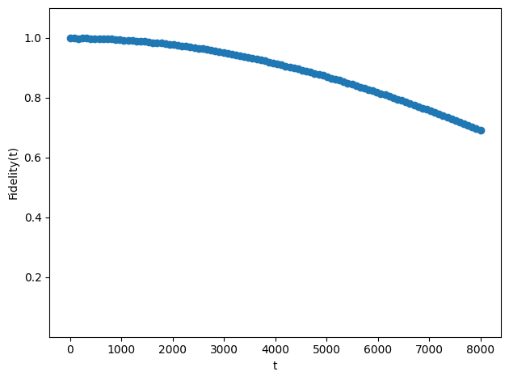
final fidelity = 0.6918527791860878
O_kin @ psi_scar = [-0.00809208-0.01542537j 0.0014847 -0.00168695j -0.00405283+0.00038009j
-0.00015538+0.00763505j -0.00148649-0.00084652j -0.0046398 +0.00156666j
-0.00208771-0.00776528j 0.00108227+0.00019704j -0.00108165-0.00046034j
-0.00600437-0.00766009j -0.00376304-0.00172192j -0.00148408+0.00142365j
-0.00015538+0.00763505j 0.00108227+0.00019704j -0.00148408+0.00142365j
-0.00031076+0.01527011j]
<O_kin> = (3.376562969898886e-05-5.6669523138640625e-05j)
<O_pot> = (-1.103455166699037+0.38140572068114603j)
<H> = (-1.103421401069338+0.38134905115800743j)
Lattice 4x4#
[82]:
coup_j, coup_rk = (1, 1)
basis, model = setup_model(lattice_shape=(4, 4), n_solution=132, coup_j=coup_j, coup_rk=coup_rk)
evals, evecs = np.linalg.eigh(model.hamiltonian)
2023-12-09 12:28:04 [deep_first_search.py] INFO: Deep First Search starts.
2023-12-09 12:28:04 [deep_first_search.py] INFO: Found 132 Solutions as required in 1626 steps.
[83]:
df = basis.dataframe.copy(deep=True)
df.index = format_custom_index(df.index)
df
[83]:
| 0 | 1 | 2 | 3 | 4 | 5 | 6 | 7 | 8 | 9 | ... | 22 | 23 | 24 | 25 | 26 | 27 | 28 | 29 | 30 | 31 | |
|---|---|---|---|---|---|---|---|---|---|---|---|---|---|---|---|---|---|---|---|---|---|
| (0) 1142025915 | 0 | 1 | 0 | 0 | 0 | 1 | 0 | 0 | 0 | 0 | ... | 1 | 0 | 1 | 0 | 1 | 1 | 1 | 0 | 1 | 1 |
| (1) 1143328443 | 0 | 1 | 0 | 0 | 0 | 1 | 0 | 0 | 0 | 0 | ... | 1 | 0 | 1 | 0 | 1 | 1 | 1 | 0 | 1 | 1 |
| (2) 1146285243 | 0 | 1 | 0 | 0 | 0 | 1 | 0 | 0 | 0 | 1 | ... | 0 | 0 | 1 | 0 | 1 | 1 | 1 | 0 | 1 | 1 |
| (3) 1147587771 | 0 | 1 | 0 | 0 | 0 | 1 | 0 | 0 | 0 | 1 | ... | 0 | 0 | 1 | 0 | 1 | 1 | 1 | 0 | 1 | 1 |
| (4) 1147913403 | 0 | 1 | 0 | 0 | 0 | 1 | 0 | 0 | 0 | 1 | ... | 0 | 0 | 1 | 0 | 1 | 1 | 1 | 0 | 1 | 1 |
| ... | ... | ... | ... | ... | ... | ... | ... | ... | ... | ... | ... | ... | ... | ... | ... | ... | ... | ... | ... | ... | ... |
| (127) 3998411793 | 1 | 1 | 1 | 0 | 1 | 1 | 1 | 0 | 0 | 1 | ... | 0 | 0 | 0 | 0 | 0 | 1 | 0 | 0 | 0 | 1 |
| (128) 3999714321 | 1 | 1 | 1 | 0 | 1 | 1 | 1 | 0 | 0 | 1 | ... | 0 | 0 | 0 | 0 | 0 | 1 | 0 | 0 | 0 | 1 |
| (129) 4000039953 | 1 | 1 | 1 | 0 | 1 | 1 | 1 | 0 | 0 | 1 | ... | 0 | 0 | 0 | 0 | 0 | 1 | 0 | 0 | 0 | 1 |
| (130) 4004924433 | 1 | 1 | 1 | 0 | 1 | 1 | 1 | 0 | 1 | 0 | ... | 0 | 0 | 0 | 0 | 0 | 1 | 0 | 0 | 0 | 1 |
| (131) 4005250065 | 1 | 1 | 1 | 0 | 1 | 1 | 1 | 0 | 1 | 0 | ... | 0 | 0 | 0 | 0 | 0 | 1 | 0 | 0 | 0 | 1 |
132 rows × 32 columns
[84]:
evecs_df = pd.DataFrame.from_dict(
{
"eval": evals,
"kin": [(evec.T @ model.kinetic_term @ evec).item() for evec in evecs.T],
"pot": [(evec.T @ model.potential_term @ evec).item() for evec in evecs.T],
}
)
evecs_df[evecs_df["kin"].abs() < 1e-12]
[84]:
| eval | kin | pot | |
|---|---|---|---|
| 47 | 4.0 | -9.907176e-30 | 4.0 |
| 48 | 4.0 | -8.923989e-30 | 4.0 |
| 49 | 4.0 | -9.959369e-30 | 4.0 |
| 50 | 4.0 | -6.914859e-30 | 4.0 |
| 51 | 4.0 | -5.756219e-30 | 4.0 |
| 52 | 4.0 | 3.056836e-30 | 4.0 |
| 53 | 4.0 | -2.465190e-30 | 4.0 |
| 54 | 4.0 | -1.015658e-29 | 4.0 |
| 55 | 4.0 | -1.005798e-29 | 4.0 |
[52]:
# plt.matshow(ham)
# plt.colorbar()
# plt.show()
g = nx.from_numpy_array(-model.kinetic_term)
left, right = nx.bipartite.sets(g)
# pos = nx.bipartite_layout(g, left, align='horizontal')
pos = nx.spectral_layout(g)
pos = {k: v + np.random.normal(0, 0.08, 2) for k, v in pos.items()}
fig = plt.figure(figsize=(82, 32))
nx.draw(g, pos, with_labels=True, node_size=5000, font_size=42, arrows=True, connectionstyle="arc3,rad=0.15")
plt.show()
plt.spy(evecs, precision=1e-12, markersize=0.1)
plt.show()
# plt.imshow(np.abs(evecs), interpolation='none', cmap='binary')
# plt.colorbar()
# plt.show()
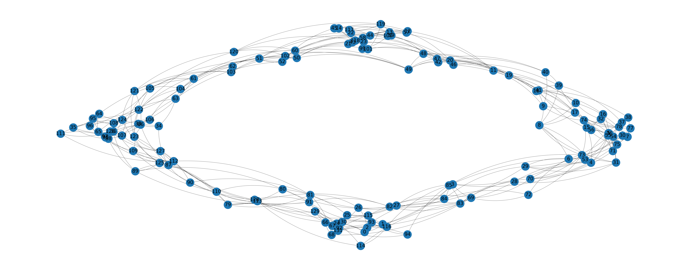
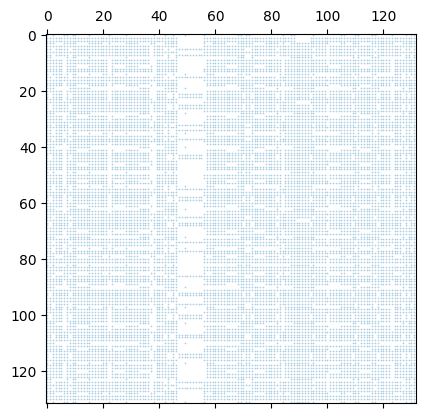
[53]:
print(np.linalg.matrix_rank(model.kinetic_term))
plt.matshow(evecs[:, 46:60].T)
plt.colorbar()
102
[53]:
<matplotlib.colorbar.Colorbar at 0x133d8ff90>
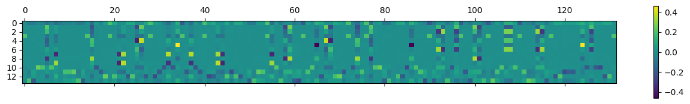
[54]:
entropies = np.asarray([model.entropy(evecs[:, i], 0, 0) for i in range(basis.n_states)])
entropy_df = pd.Series(entropies, name="entropy")
entropy_df[entropy_df < 1.75]
[54]:
51 1.239624
53 1.603249
55 1.675178
Name: entropy, dtype: float64
[55]:
entropy_df.plot(style='o')
[55]:
<Axes: >
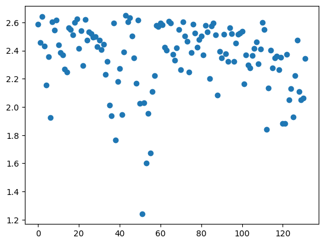
[56]:
plt.plot(evecs[:, 51], linestyle='--', marker='o')
np.where(np.abs(evecs[:, 51]) > 0.2)[0]
[56]:
array([ 34, 65, 86, 124])
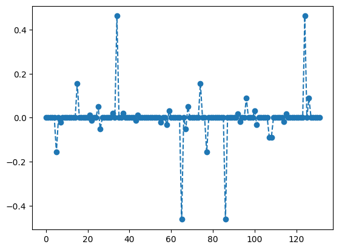
[57]:
# {i: len(np.where(np.abs(evecs[:, i]) > 1e-12)[0]) for i in range(300)}
for i in np.where(np.abs(evecs[:, 51]) > 0.2)[0]:
g = GraphVisualizer(SquareLattice(*model.shape, basis.dataframe.iloc[i]))
# plt.figure(figsize=(10, 4), facecolor='white')
g.plot()
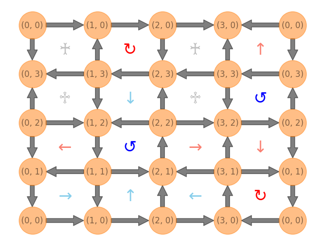
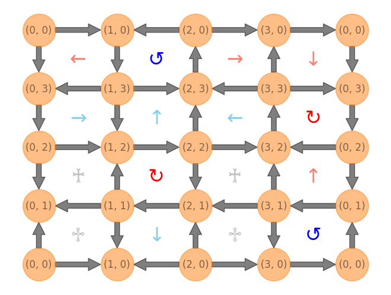
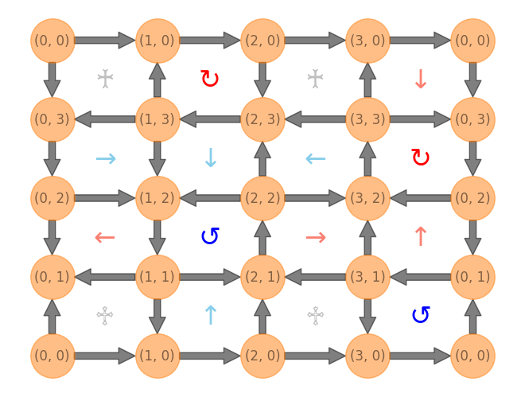
[67]:
coup_j = np.ones((np.prod(model.shape), 1))
coup_j[5] = 1.5
energy_lump_model = QuantumLinkModel(coup_j, coup_rk, model.shape, basis)
energy_lump_ham = energy_lump_model.hamiltonian
scar_state = np.zeros((basis.n_states, 1))
scar_state[np.array([34, 65, 86, 124]), 0] = np.array([1, -1, -1, 1])
scar_state /= np.linalg.norm(scar_state)
evol_states = expm_multiply(-1j * energy_lump_ham, scar_state, start=0, stop=5000, num=100)
fidelity = [np.abs(evol_state.T @ scar_state).item() ** 2 for evol_state in evol_states]
plt.plot(np.linspace(0, 5000, 100), fidelity, linestyle="--", marker="o")
plt.ylim(0.0001, 1.1)
# plt.yscale('log')
plt.xlabel("t")
plt.ylabel("Fidelity(t)")
plt.tight_layout()
plt.show()
final_state = np.real_if_close(evol_states[-1], tol=1e-12)
print(f"final fidelity = {fidelity[-1]}")
print(f"O_kin @ psi_scar = {(model.kinetic_term @ final_state).flatten()}")
print(f"<O_kin> = {(final_state.T @ model.kinetic_term @ final_state).item()}")
print(f"<O_pot> = {(final_state.T @ model.potential_term @ final_state).item()}")
print(f"<H> = {(final_state.T @ model.hamiltonian @ final_state).item()}")
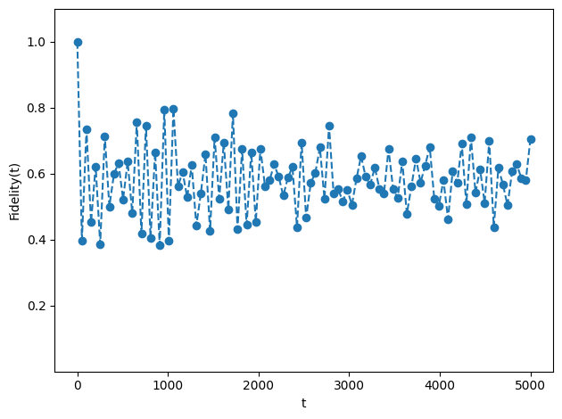
final fidelity = 0.7053538500152975
O_kin @ psi_scar = [-6.73272906e-16+1.11961322e-15j -1.69958714e-16+4.41404319e-16j
1.93284909e-15-3.30919022e-15j -1.31749589e-15+2.31674566e-15j
4.07117784e-15+6.89219069e-16j -4.06218019e-02+2.75167662e-02j
4.17306829e-15+7.88675160e-16j -4.06218019e-02+2.75167662e-02j
-6.90419943e-16+1.67097239e-15j 3.00391630e-02-7.41451850e-03j
3.00391630e-02-7.41451850e-03j -1.77927588e-02+3.37588170e-02j
7.37749175e-02-8.52832222e-02j -4.55435561e-02+8.05456847e-02j
8.00861747e-04+4.89493896e-03j 4.06218019e-02-2.75167662e-02j
3.24425797e-15+2.73107238e-16j -3.00391630e-02+7.41451850e-03j
-6.48786580e-16-1.47451495e-16j -4.14598911e-16+3.24436658e-15j
8.65720828e-03+1.91313497e-02j -3.92051014e-02+3.71702569e-02j
2.98898800e-02+1.56198578e-02j -6.99633867e-03-1.57350253e-02j
1.62911285e-15-1.66027434e-16j -3.85430028e-15+1.60258815e-15j
1.61777482e-15-7.21381034e-16j 1.99373525e-15-1.21295019e-15j
8.58790946e-16+6.81452811e-16j 2.23432384e-15+1.50227053e-15j
4.39356807e-02-4.47781112e-02j 3.67414432e-15+3.46250806e-15j
-4.06218019e-02+2.75167662e-02j 7.06749013e-16-1.16044719e-15j
-2.61677488e-02+7.43181156e-02j 1.51447048e-15+7.98143666e-17j
-9.41387788e-02-1.15481131e-01j 4.06218019e-02-2.75167662e-02j
2.65675963e-15-9.87771583e-16j -3.00391630e-02+7.41451850e-03j
-1.35655376e-15-1.73472348e-18j -1.25073563e-15+5.89805982e-17j
8.65720828e-03+1.91313497e-02j -3.92051014e-02+3.71702569e-02j
2.98898800e-02+1.56198578e-02j -6.99633867e-03-1.57350253e-02j
1.77927588e-02-3.37588170e-02j -8.65720828e-03-1.91313497e-02j
-8.65720828e-03-1.91313497e-02j 1.51961776e-15+2.40085729e-15j
-1.11024065e-01-6.20037681e-02j 8.61144425e-02+7.35339542e-02j
-5.95330202e-02-2.92537004e-03j -4.39356807e-02+4.47781112e-02j
9.36750677e-16-9.92261828e-16j 4.06218019e-02-2.75167662e-02j
-1.25247035e-15+8.56953397e-16j -7.37749175e-02+8.52832222e-02j
3.92051014e-02-3.71702569e-02j 3.92051014e-02-3.71702569e-02j
1.11024065e-01+6.20037681e-02j -3.10348852e-15-1.31686753e-15j
1.87980185e-02-1.80165377e-02j 2.90811745e-02-1.06629387e-01j
2.99760217e-15+6.66133815e-16j -2.61677488e-02+7.43181156e-02j
1.97526933e-15-9.31284041e-16j -3.44943902e-15+2.12288062e-15j
2.02263608e-15-2.01088571e-16j 9.82028029e-16-2.14569746e-15j
-5.73789164e-16+1.18271242e-15j 4.39356807e-02-4.47781112e-02j
7.74965658e-16+8.45492220e-16j 2.65065747e-15+3.46250806e-15j
-4.06218019e-02+2.75167662e-02j -4.39356807e-02+4.47781112e-02j
-1.03698782e-15-1.18383508e-15j 4.06218019e-02-2.75167662e-02j
-8.67361738e-16+1.26287869e-15j 1.61774893e-15-2.36627592e-15j
-1.92350135e-16+2.37323597e-15j 1.68616874e-15-4.80444700e-15j
3.61778615e-17-1.21405594e-15j 2.12852142e-15-2.32080110e-15j
4.01085662e-15+5.27114311e-17j 2.18378215e-15+4.85479203e-16j
2.61677488e-02-7.43181156e-02j 1.13838805e-15-3.52816328e-16j
9.41387788e-02+1.15481131e-01j 5.08138096e-15+2.06105287e-15j
2.45696967e-15+1.19595095e-15j 2.46721075e-15+1.49708218e-15j
1.86082156e-15-6.99237029e-16j 9.31720662e-16-1.28242247e-15j
4.26155069e-15+4.51869771e-16j 9.87722266e-16-1.01019850e-15j
-2.90468340e-02-1.89432835e-02j 5.48606299e-16-2.91433544e-15j
6.50769339e-02+3.25194975e-02j 4.55435561e-02-8.05456847e-02j
-2.98898800e-02-1.56198578e-02j -2.98898800e-02-1.56198578e-02j
-8.61144425e-02-7.35339542e-02j -1.87980185e-02+1.80165377e-02j
3.28209682e-15-1.77635684e-15j -1.28160094e-01+7.16624259e-02j
-1.13103971e-15+2.26901831e-15j -2.90468340e-02-1.89432835e-02j
2.90468340e-02+1.89432835e-02j 5.74846066e-16+1.87528497e-16j
5.88609695e-16-2.72040773e-15j -6.50769339e-02-3.25194975e-02j
-2.77338916e-15-2.01227923e-15j -2.20337657e-15-9.72051539e-16j
8.11752525e-16+3.36185612e-16j -1.17348376e-16-2.46999827e-16j
9.38600369e-16-2.63046716e-15j -8.00861747e-04-4.89493896e-03j
6.99633867e-03+1.57350253e-02j 6.99633867e-03+1.57350253e-02j
5.95330202e-02+2.92537004e-03j -2.90811745e-02+1.06629387e-01j
1.28160094e-01-7.16624259e-02j -5.86336535e-16+1.70696790e-15j
2.61677488e-02-7.43181156e-02j 3.66373598e-15+5.66213743e-15j
2.90468340e-02+1.89432835e-02j -1.24900090e-16+3.68108322e-15j
2.07093191e-15+1.23585797e-15j 7.02734498e-16+1.00646873e-16j
1.94530919e-15+1.35691385e-15j 5.48904034e-16+5.49705443e-16j]
<O_kin> = (-0.04413905054095544-0.01077276616282958j)
<O_pot> = (0.5539940111576089+2.8799866771375404j)
<H> = (0.5098549606166529+2.869213910974711j)
Lattice 6x2#
[85]:
coup_j, coup_rk = (1, 1)
basis, model = setup_model(lattice_shape=(6, 2), n_solution=76, coup_j=coup_j, coup_rk=coup_rk)
evals, evecs = np.linalg.eigh(model.hamiltonian)
2023-12-09 12:30:52 [deep_first_search.py] INFO: Deep First Search starts.
2023-12-09 12:30:52 [deep_first_search.py] INFO: Found 76 Solutions as required in 693 steps.
[86]:
df = basis.dataframe.copy(deep=True)
df.index = format_custom_index(df.index)
df
[86]:
| 0 | 1 | 2 | 3 | 4 | 5 | 6 | 7 | 8 | 9 | ... | 14 | 15 | 16 | 17 | 18 | 19 | 20 | 21 | 22 | 23 | |
|---|---|---|---|---|---|---|---|---|---|---|---|---|---|---|---|---|---|---|---|---|---|
| (0) 4475835 | 0 | 1 | 0 | 0 | 0 | 1 | 0 | 0 | 0 | 1 | ... | 1 | 1 | 1 | 0 | 1 | 1 | 1 | 0 | 1 | 1 |
| (1) 4496307 | 0 | 1 | 0 | 0 | 0 | 1 | 0 | 0 | 1 | 0 | ... | 1 | 1 | 1 | 0 | 1 | 1 | 0 | 0 | 1 | 1 |
| (2) 4508598 | 0 | 1 | 0 | 0 | 0 | 1 | 0 | 0 | 1 | 1 | ... | 1 | 1 | 1 | 0 | 1 | 1 | 0 | 1 | 1 | 0 |
| (3) 4774695 | 0 | 1 | 0 | 0 | 1 | 0 | 0 | 0 | 1 | 1 | ... | 1 | 1 | 0 | 0 | 1 | 0 | 0 | 1 | 1 | 1 |
| (4) 4803387 | 0 | 1 | 0 | 0 | 1 | 0 | 0 | 1 | 0 | 1 | ... | 1 | 1 | 0 | 0 | 1 | 1 | 1 | 0 | 1 | 1 |
| ... | ... | ... | ... | ... | ... | ... | ... | ... | ... | ... | ... | ... | ... | ... | ... | ... | ... | ... | ... | ... | ... |
| (71) 15524133 | 1 | 1 | 1 | 0 | 1 | 1 | 0 | 0 | 1 | 1 | ... | 0 | 1 | 0 | 0 | 1 | 0 | 0 | 1 | 0 | 1 |
| (72) 15566130 | 1 | 1 | 1 | 0 | 1 | 1 | 0 | 1 | 1 | 0 | ... | 0 | 1 | 0 | 0 | 1 | 1 | 0 | 0 | 1 | 0 |
| (73) 15573297 | 1 | 1 | 1 | 0 | 1 | 1 | 0 | 1 | 1 | 0 | ... | 0 | 1 | 0 | 0 | 1 | 1 | 0 | 0 | 0 | 1 |
| (74) 15648018 | 1 | 1 | 1 | 0 | 1 | 1 | 1 | 0 | 1 | 1 | ... | 0 | 1 | 0 | 0 | 0 | 1 | 0 | 0 | 1 | 0 |
| (75) 15655185 | 1 | 1 | 1 | 0 | 1 | 1 | 1 | 0 | 1 | 1 | ... | 0 | 1 | 0 | 0 | 0 | 1 | 0 | 0 | 0 | 1 |
76 rows × 24 columns
[6]:
fig, axes = plt.subplots(19, 4, figsize=(30, 60), facecolor="white")
ax = axes.flatten()
for i in range(basis.n_states):
g = GraphVisualizer(SquareLattice(*model.shape, basis.dataframe.iloc[i]))
g.plot(show=False, ax=ax[i], node_size=800)
ax[i].set_title(f"{df.index[i]}")
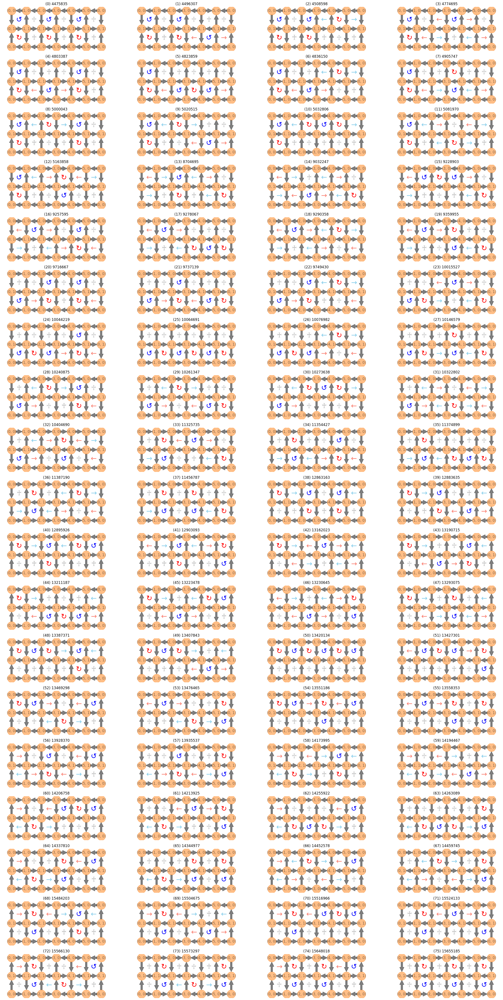
[7]:
g = nx.from_numpy_array(-model.kinetic_term)
left, right = nx.bipartite.sets(g)
# pos = nx.bipartite_layout(g, left, align='horizontal')
pos = nx.spectral_layout(g)
pos = {k: v + np.random.normal(0, 0.03, 2) for k, v in pos.items()}
fig = plt.figure(figsize=(82, 32))
nx.draw(g, pos, with_labels=True, node_size=5000, font_size=42, arrows=True, connectionstyle="arc3,rad=0.15")
plt.show()
plt.spy(evecs, precision=1e-12, markersize=1)
plt.show()
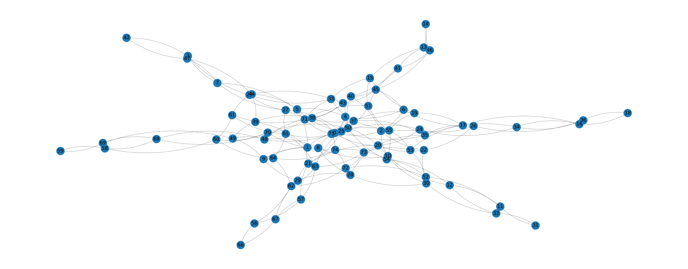
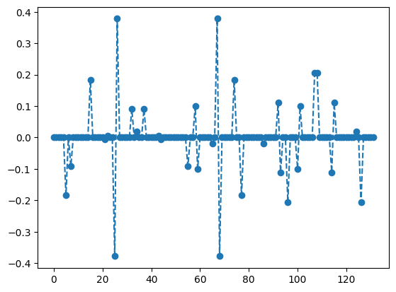
[121]:
entropies = np.asarray([model.entropy(evecs[:, i], 0, 0) for i in range(basis.n_states)])
entropy_df = pd.Series(entropies, name="entropy")
entropy_df.loc[(entropy_df.index >= 20) & (entropy_df.index <= 50) & (entropy_df < 1.75)]
[121]:
20 1.058436
21 1.059513
22 1.061746
23 1.054004
24 1.074146
25 1.075756
26 1.012101
27 1.045869
28 1.041082
29 1.036557
30 0.997521
31 1.003358
32 1.054331
33 1.045045
34 1.032524
35 1.043826
36 1.053413
37 1.049003
38 1.061464
39 1.071072
40 1.050495
41 1.034524
42 1.093099
43 1.087584
44 0.949660
45 1.050145
46 1.028086
47 1.045876
48 1.041796
49 1.025918
50 1.020980
Name: entropy, dtype: float64
[122]:
entropy_df.plot(style='o')
[122]:
<Axes: >
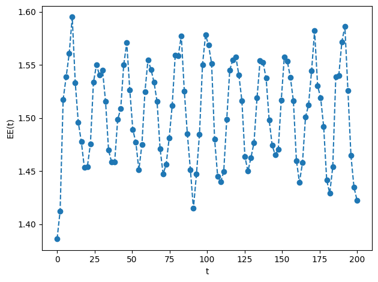
[120]:
plt.plot(evecs[:, 44], linestyle='--', marker='o')
np.where(np.abs(evecs[:, 44]) > 0.15)[0]
[120]:
array([15, 17, 23, 26, 29, 30, 44, 45, 49, 52, 60, 62])

[119]:
evecs_df = pd.DataFrame.from_dict(
{
"eval": evals,
"kin": [(evec.T @ model.kinetic_term @ evec).item() for evec in evecs.T],
"pot": [(evec.T @ model.potential_term @ evec).item() for evec in evecs.T],
}
)
evecs_df.iloc[44]
[119]:
eval 4.678363
kin 0.730499
pot 3.947864
Name: 44, dtype: float64
[130]:
coup_j = np.ones((np.prod(model.shape), 1))
coup_j[0] = 1.05
energy_lump_model = QuantumLinkModel(coup_j, coup_rk, model.shape, basis)
energy_lump_ham = energy_lump_model.hamiltonian
# scar_state = np.zeros((basis.n_states, 1))
# scar_state[np.array([30, 45, 49, 26, 29, 44, 15, 52, 60, 17, 23, 62]), 0] = np.array([-1, -1, -1, 1, 1, 1, 1, 1, 1, -1, -1, -1]) # based on 44
# scar_state[np.array([3, 11, 16, 32, 36, 47, 58, 69]), 0] = np.array([1, -1, -1, 1, 1, -1, 1, -1]) # based on 24
# scar_state /= np.linalg.norm(scar_state)
scar_state = evecs[:, 44]
evol_states = expm_multiply(-1j * energy_lump_ham, scar_state, start=0, stop=1000, num=100)
fidelity = [np.abs(evol_state.T @ scar_state).item() ** 2 for evol_state in evol_states]
plt.plot(np.linspace(0, 1000, 100), fidelity, linestyle="--", marker="o")
plt.ylim(0.0001, 1.1)
# plt.yscale('log')
plt.xlabel("t")
plt.ylabel("Fidelity(t)")
plt.tight_layout()
plt.show()
final_state = np.real_if_close(evol_states[-1], tol=1e-12)
print(f"final fidelity = {fidelity[-1]}")
print(f"O_kin @ psi_scar = {(model.kinetic_term @ final_state).flatten()}")
print(f"<O_kin> = {(final_state.T @ model.kinetic_term @ final_state).item()}")
print(f"<O_pot> = {(final_state.T @ model.potential_term @ final_state).item()}")
print(f"<H> = {(final_state.T @ model.hamiltonian @ final_state).item()}")
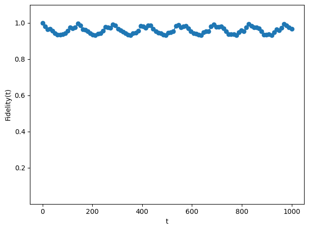
final fidelity = 0.9684200052672003
O_kin @ psi_scar = [ 4.74315894e-03-0.01351011j 1.03124779e-02+0.0318116j
-7.33306781e-03-0.03792991j 1.52997953e-02+0.18422271j
1.03124779e-02+0.0318116j 5.65523991e-03-0.00780859j
-2.38554269e-03+0.01385663j -3.13183015e-03+0.0050453j
-7.33306781e-03-0.03792991j -2.38554269e-03+0.01385663j
-8.56180912e-03-0.00084907j -1.06443298e-02-0.21186007j
3.77536184e-03+0.01009899j -6.65967834e-02-0.23316644j
4.68541366e-03+0.00990252j 4.80413953e-02+0.15468343j
8.00044595e-02+0.21580224j -5.40763198e-02-0.1522819j
-1.46383257e-02-0.00309953j 2.79780403e-03-0.00045922j
8.00265490e-03+0.03862601j -4.03437097e-03+0.01099935j
-8.74394704e-03+0.02450193j -6.58516552e-03-0.12468163j
-4.03437097e-03+0.01099935j -5.63272425e-04+0.00214595j
4.15657095e-02+0.13874161j -8.01670083e-03+0.00049375j
-8.74394704e-03+0.02450193j 4.15657095e-02+0.13874161j
-2.04103940e-02-0.15438129j -1.65784189e-02-0.00708621j
4.32299982e-02+0.22165957j -1.01782856e-02+0.00430125j
-5.06235089e-03+0.00535867j 3.50300113e-03-0.0122706j
-5.43469476e-02-0.20895467j -4.47406122e-03-0.03199298j
-1.39877506e-02-0.03288221j -4.09086539e-03-0.01194989j
-1.99571287e-03-0.01061221j -7.85315053e-03+0.0032013j
1.65833918e-02+0.01981576j -4.09086539e-03-0.01194989j
3.82538196e-02+0.14726209j -3.61579908e-02-0.15076817j
5.70365967e-02+0.21604356j -4.83700054e-02-0.2317743j
-1.99571287e-03-0.01061221j -3.61579908e-02-0.15076817j
-4.72334768e-03+0.00378277j 5.41275120e-05+0.00747382j
4.61661124e-03+0.1427896j 1.67261583e-02-0.01445576j
3.83624394e-03-0.00639957j 3.94113378e-03+0.03493185j
8.00044595e-02+0.21580224j -5.06235089e-03+0.00535867j
-6.65967834e-02-0.23316644j 4.68541366e-03+0.00990252j
4.80413953e-02+0.15468343j -1.01782856e-02+0.00430125j
-5.40763198e-02-0.1522819j 3.50300113e-03-0.0122706j
2.79780403e-03-0.00045922j -4.47406122e-03-0.03199298j
-1.46383257e-02-0.00309953j -5.43469476e-02-0.20895467j
-7.85315053e-03+0.0032013j 5.70365967e-02+0.21604356j
5.41275120e-05+0.00747382j 1.99522153e-02+0.04243186j
1.67261583e-02-0.01445576j -1.21787411e-02-0.03798336j
3.94113378e-03+0.03493185j -1.92233570e-03+0.01589628j]
<O_kin> = (-0.6240604520813793+0.3289334174913119j)
<O_pot> = (-3.4166034229539792+1.73700287895565j)
<H> = (-4.040663875035359+2.065936296446962j)
Lattice 6x4#
[131]:
coup_j, coup_rk = (1, 1)
basis, model = setup_model(lattice_shape=(6, 4), n_solution=1456, coup_j=coup_j, coup_rk=coup_rk)
evals, evecs = np.linalg.eigh(model.hamiltonian)
2023-12-09 12:47:54 [deep_first_search.py] INFO: Deep First Search starts.
2023-12-09 12:48:04 [deep_first_search.py] INFO: Found 1456 Solutions as required in 27921 steps.
[132]:
df = basis.dataframe.copy(deep=True)
df.index = format_custom_index(df.index)
df
[132]:
| 0 | 1 | 2 | 3 | 4 | 5 | 6 | 7 | 8 | 9 | ... | 38 | 39 | 40 | 41 | 42 | 43 | 44 | 45 | 46 | 47 | |
|---|---|---|---|---|---|---|---|---|---|---|---|---|---|---|---|---|---|---|---|---|---|
| (0) 75046264433595 | 0 | 1 | 0 | 0 | 0 | 1 | 0 | 0 | 0 | 1 | ... | 1 | 1 | 1 | 0 | 1 | 1 | 1 | 0 | 1 | 1 |
| (1) 75046599846843 | 0 | 1 | 0 | 0 | 0 | 1 | 0 | 0 | 0 | 1 | ... | 1 | 1 | 1 | 0 | 1 | 1 | 1 | 0 | 1 | 1 |
| (2) 75051631045563 | 0 | 1 | 0 | 0 | 0 | 1 | 0 | 0 | 0 | 1 | ... | 1 | 1 | 1 | 0 | 1 | 1 | 1 | 0 | 1 | 1 |
| (3) 75051966458811 | 0 | 1 | 0 | 0 | 0 | 1 | 0 | 0 | 0 | 1 | ... | 1 | 1 | 1 | 0 | 1 | 1 | 1 | 0 | 1 | 1 |
| (4) 75053308111803 | 0 | 1 | 0 | 0 | 0 | 1 | 0 | 0 | 0 | 1 | ... | 1 | 1 | 1 | 0 | 1 | 1 | 1 | 0 | 1 | 1 |
| ... | ... | ... | ... | ... | ... | ... | ... | ... | ... | ... | ... | ... | ... | ... | ... | ... | ... | ... | ... | ... | ... |
| (1451) 262694465618193 | 1 | 1 | 1 | 0 | 1 | 1 | 1 | 0 | 1 | 1 | ... | 0 | 1 | 0 | 0 | 0 | 1 | 0 | 0 | 0 | 1 |
| (1452) 262694801031441 | 1 | 1 | 1 | 0 | 1 | 1 | 1 | 0 | 1 | 1 | ... | 0 | 1 | 0 | 0 | 0 | 1 | 0 | 0 | 0 | 1 |
| (1453) 262694884884753 | 1 | 1 | 1 | 0 | 1 | 1 | 1 | 0 | 1 | 1 | ... | 0 | 1 | 0 | 0 | 0 | 1 | 0 | 0 | 0 | 1 |
| (1454) 262696142684433 | 1 | 1 | 1 | 0 | 1 | 1 | 1 | 0 | 1 | 1 | ... | 0 | 1 | 0 | 0 | 0 | 1 | 0 | 0 | 0 | 1 |
| (1455) 262696226537745 | 1 | 1 | 1 | 0 | 1 | 1 | 1 | 0 | 1 | 1 | ... | 0 | 1 | 0 | 0 | 0 | 1 | 0 | 0 | 0 | 1 |
1456 rows × 48 columns
[140]:
evecs_df = pd.DataFrame.from_dict(
{
"eval": evals,
"kin": [(evec.T @ model.kinetic_term @ evec).item() for evec in evecs.T],
"pot": [(evec.T @ model.potential_term @ evec).item() for evec in evecs.T],
}
)
evecs_df.iloc[254] #[evecs_df["kin"].abs() < 1e-4]
[140]:
eval 4.000000
kin -0.071014
pot 4.071014
Name: 254, dtype: float64
[149]:
g = nx.from_numpy_array(-model.kinetic_term)
left, right = nx.bipartite.sets(g)
# pos = nx.bipartite_layout(g, left, align='horizontal')
pos = nx.spectral_layout(g)
pos = {k: v + np.random.normal(0, 0.08, 2) for k, v in pos.items()}
fig = plt.figure(figsize=(82, 32))
nx.draw(g, pos, with_labels=True, node_size=5000, font_size=42, arrows=True, connectionstyle="arc3,rad=0.15")
plt.show()
plt.spy(evecs, precision=1e-12, markersize=0.05)
plt.show()

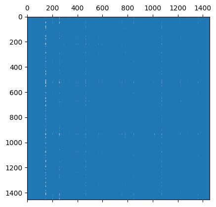
[136]:
entropies = np.asarray([model.entropy(evecs[:, i], 0, 0) for i in range(basis.n_states)])
entropy_df = pd.Series(entropies, name="entropy")
entropy_df[entropy_df < 1.6]
[136]:
254 0.768489
1219 1.511229
Name: entropy, dtype: float64
[137]:
entropy_df.plot(style='o')
[137]:
<Axes: >
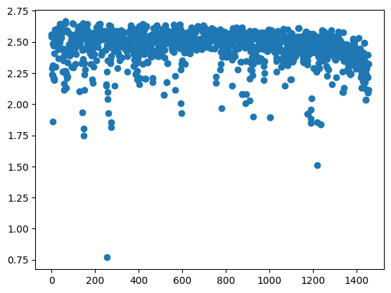
[139]:
plt.plot(evecs[:, 254], linestyle='--', marker='o')
np.where(np.abs(evecs[:, 254]) > 0.15)[0]
[139]:
array([ 367, 390, 655, 695, 1099, 1102, 1239, 1256])
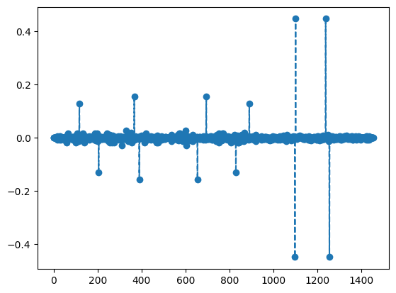
[143]:
fig, axes = plt.subplots(2, 2, figsize=(16, 12), facecolor="white")
ax = axes.flatten()
for i, val in enumerate([1099, 1102, 1239, 1256]):
g = GraphVisualizer(SquareLattice(*model.shape, basis.dataframe.iloc[val]))
g.plot(show=False, ax=ax[i], node_size=800)
ax[i].set_title(f"{df.index[val]}")

[148]:
coup_j = np.ones((np.prod(model.shape), 1))
coup_j[1] = 1.5
energy_lump_model = QuantumLinkModel(coup_j, coup_rk, model.shape, basis)
energy_lump_ham = energy_lump_model.hamiltonian
scar_state = np.zeros((basis.n_states, 1))
scar_state[np.array([1099, 1102, 1239, 1256]), 0] = np.array([1, -1, -1, 1])
scar_state /= np.linalg.norm(scar_state)
evol_states = expm_multiply(-1j * energy_lump_ham, scar_state, start=0, stop=400, num=100)
fidelity = [np.abs(evol_state.T @ scar_state).item() ** 2 for evol_state in evol_states]
plt.plot(np.linspace(0, 400, 100), fidelity, linestyle="--", marker="o")
plt.ylim(0.0001, 1.1)
# plt.yscale('log')
plt.xlabel("t")
plt.ylabel("Fidelity(t)")
plt.tight_layout()
plt.show()
final_state = np.real_if_close(evol_states[-1], tol=1e-12)
print(f"final fidelity = {fidelity[-1]}")
print(f"O_kin @ psi_scar = {(model.kinetic_term @ final_state).flatten()}")
print(f"<O_kin> = {(final_state.T @ model.kinetic_term @ final_state).item()}")
print(f"<O_pot> = {(final_state.T @ model.potential_term @ final_state).item()}")
print(f"<H> = {(final_state.T @ model.hamiltonian @ final_state).item()}")
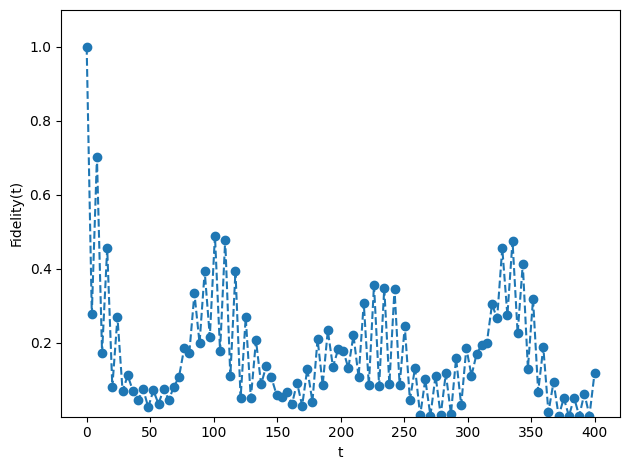
final fidelity = 0.11950576091471703
O_kin @ psi_scar = [-0.05437598+0.02079592j 0.01736323+0.01409695j -0.04329677+0.01510783j
... -0.04294009-0.0047656j -0.03081282+0.03101212j
-0.05437598+0.02079592j]
<O_kin> = (-0.20564003238744755-0.11039706866618174j)
<O_pot> = (0.8861749223952038+0.21646382074602477j)
<H> = (0.680534890007755+0.10606675207984309j)
Lattice 8x4#
[ ]:
coup_j, coup_rk = (1, 1)
gauss_law = GaussLaw.from_staggered_charge_distri(8, 4)
gauss_law.flux_sector = (0, 0)
dfs = DeepFirstSearch(gauss_law, max_steps=int(1e+8))
basis = gauss_law.to_basis(dfs.solve(n_solution=17412))
model = QuantumLinkModel(coup_j, coup_rk, (8, 4), basis)
[ ]:
df = basis.dataframe.copy(deep=True)
df.index = format_custom_index(df.index)
df
[ ]:
g = nx.from_numpy_array(-model.kinetic_term)
left, right = nx.bipartite.sets(g)
# pos = nx.bipartite_layout(g, left, align='horizontal')
pos = nx.spectral_layout(g)
# pos = {k: v + np.random.normal(0, 0.08, 2) for k, v in pos.items()}
fig = plt.figure(figsize=(82, 32))
nx.draw(g, pos, with_labels=True, node_size=5000, font_size=42, arrows=True, connectionstyle="arc3,rad=0.15")
plt.show()
plt.spy(evecs, precision=1e-12, markersize=0.05)
plt.show()
[ ]: